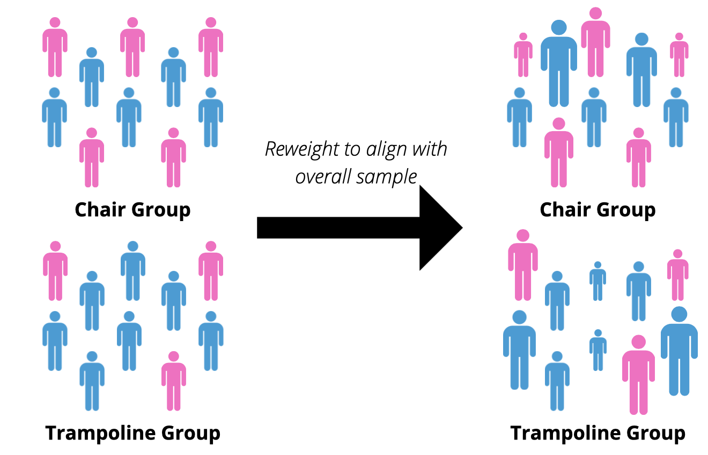

Re-weighting in this context has nothing to do with weight. Instead it is a statistical method that is used to adjust for confounding to ensure exchangeability. This method can be helpful for answering questions about the marginal or conditional causal effect.
Now, what is a better way to get started than with probability yet again? In this case, we are going to talk about the probability of receiving treatment.
A term that is commonly used in clinical epidemiology is the propensity score. The propensity score is the conditional probability of receiving treatment (Hernan and Robins 2021), or in mathematical notation:
\[
Pr[A = 1| L = l]
\]
Where A is treatment and L is the covariate(s) of interest. While equations are good, examples are better. Imagine we have a clinical trial with two groups, wanting to determine if bouncing up and down on a trampoline causes a headache. The treatment group get to bounce on a trampoline for 10 minutes, while the control group have to sit down on a chair for 10 minutes. In this scenario, the propensity score would be the conditional probability of getting to bounce on the trampoline based on your age, sex and color shirt you are wearing.
Does jumping on a trampoline cause a headache?
While theoretical discussions are helpful, numbers always help to really drive a point home. While we can’t conduct a clinical trial, luckily there is a database that has already collected data on such a scenario!
Code
set.seed(2218) # August 18, 2022library(tidyverse)library(rwetasks)df.tramp <-data.frame(group ="trampoline",age =runif(n =260, min =9, max =25),sex =rbinom(n =260, size =1, prob =0.77),t_shirt =sample(c("blue", "pink", "orange", "yellow"),size =260, replace =TRUE, prob =c(0.17, 0.46, 0.30, 0.07)),brain_freeze =rbinom(260, size =1, prob =0.33), # brain freeze before grouptime_standing =runif(n =260, min =0, max =60), # time standing in minutesheadache =rbinom(260, size =1, prob =0.64)) df.chair <-data.frame(group ="chair",age =runif(n =469, min =19, max =88),sex =rbinom(n =469, size =1, prob =0.28),t_shirt =sample(c("blue", "pink", "orange", "yellow"),size =469, replace =TRUE, prob =c(0.36, 0.16, 0.42, 0.23)),brain_freeze =rbinom(469, size =1, prob =0.48), # brain freeze before grouptime_standing =runif(n =469, min =0, max =60), # time standing in minutesheadache =rbinom(469, size =1, prob =0.39))df <-rbind(df.tramp, df.chair) %>% dplyr::mutate(beta_age =runif(1, min =0, max =0.10), beta_sex =runif(1, min =0, max =0.10),beta_tshirt =runif(1, min =0, max =0.10),beta_ts =runif(1, min =0, max =0.10), prob_tramp = (beta_age*age + beta_sex*sex + beta_ts*time_standing)/10,tramp_group =rbinom(729, size =1, prob = prob_tramp),prob_headache = (beta_age*age +2*beta_sex*sex +3*beta_ts*time_standing)/20,headache =rbinom(729, size =1, prob = prob_headache), )# Trampoline Group Demographicsdf.tramp.demo <- df %>% dplyr::filter(tramp_group ==1)# cbind(mean(df.tramp.demo$age), sd(df.tramp.demo$age)) # age# rwetasks::count_percent(df.tramp.demo, sex) # sex# rwetasks::count_percent(df.tramp.demo, t_shirt) # t-shirt# rwetasks::count_percent(df.tramp.demo, brain_freeze) # brain-freeze# cbind(mean(df.tramp.demo$time_standing), sd(df.tramp.demo$time_standing)) # time standing# rwetasks::count_percent(df.tramp.demo, headache) # headache# Chair Demographicsdf.chair.demo <- df %>% dplyr::filter(tramp_group ==0)# cbind(mean(df.chair.demo$age), sd(df.chair.demo$age)) # age# rwetasks::count_percent(df.chair.demo, sex) # sex# rwetasks::count_percent(df.chair.demo, t_shirt) # t-shirt# rwetasks::count_percent(df.chair.demo, brain_freeze) # brain-freeze# cbind(mean(df.chair.demo$time_standing), sd(df.chair.demo$time_standing)) # time standing# rwetasks::count_percent(df.chair.demo, headache) # headache
Table 1: Trampoline Jumpers vs Chair Sitters
Trampoline
(n = 213)
Chair
(n = 516)
Age, mean (SD)
54.2 (22.7)
34.2 (21.0)
Female, n (%)
71 (33.3)
258 (50.0)
T-Shirt Color, n (%)
Orange
Blue
Yellow
Pink
89 (41.8)
52 (24.4)
39 (18.3)
33 (15.5)
179 (34.7)
119 (23.1)
67 (13.0)
151 (29.3)
Brain Freeze, n (%)
100 (46.9)
212 (41.1)
Time Standing (minutes), mean (SD)
31.0 (16.8)
30.1 (17.9)
Headache
116 (37.8)
102 (24.2)
Now, if our causal question is “Does jumping on a trampoline cause a headache?” we need to look at the two groups that we are comparing. If we review Table 1, do the two groups look similar? Well for starters, the mean age is different. People in the trampoline group are an average age of 54 compared to 34 in the chair sitting group. The other characteristics seem quite different as well. If these two are so different how can we expect to even compare the two?! That’s like comparing apples to coconuts!
Well, luckily we can use a statistical method known as inverse probability weighting to make those coconuts look more like apples. Think of it like we are painting the coconuts, and focusing more on the ones that are a similar size and shape.
Pseudo-Population
The goal of reweighing is to make a pseudo-population where exchangeability holds. Essentially, in our “make believe” sample the two groups would be comparable. Figure 1 shows the two different groups and the proportion of male to females. Now, we can make these more similar by reweighting them to align with the overall sample (n = 729).

Figure 1: Before and After Reweighting
One way to do this, is to fit a logistic regression (since the outcome would be a yes/no) to trampoline jumpers. Using this model, we can predict the probability of someone being a trampoline jumper, or conversely the probability that they are not a trampoline jumper. Once we do that, we can compare the two groups. First, we need to go over some basics of IP weighting.
Important
Reweighting here is done to estimate the average treatment effect (ATE). Depending upon what the estimand of interest is, the weighting may be different. For example, if you want to estimate the average treatment effect in the treated (ATT), the people in the treated group would receive a weight of 1.0 while those in the control group are reweighted. For more information on choosing the estimand of interest, I recommend reading Greifer and Stuart (2021).
IP Weighting
The pseudo-population is created by weighting each individual by the inverse of the conditional probability of receiving the treatment they did actually receive (Hernan and Robins 2021, 151). The formula for this is:
\[
W^a = \frac{1}{f[A|L]}
\]
For our example, \(f[A|L]\) is the probability of being a trampoline jumper conditional on the measured confounders. In mathematical notation:
Great! So basically all we need to do is calculate the probability of being a trampoline jumper given measured confounders then we can calculate the conditional probability of not being a trampoline jumper . Now how do we calculate this conditional probability?
Logistic Regression
Since our two groups can be thought of as a binary variable, trampoline jumpers or not trampoline jumpers, we get a parametric estimate using logistic regression. Assuming that our model is correct, we can then predict/estimate \(Pr[A=\text{trampoline jumper}|L]\). If no confounding for the effect of A in the pseudo-population and the model is correctly specified, then association is causation and an unbiased estimator of the associational difference in the pseudo-population (Hernan and Robins 2021, 151) :
\[
E[Headache | A = \text{trampoline jumper}] - E[Headache | A = \text{not a trampoline jumper}]
\]
is also an unbiased estimator of the causal difference:
Now we are ready to estimate some weights! We will estimate the weights using a logistic regression with the following confounders: age, sex, and time standing.
Note
For this example we have selected age, sex and time standing to be confounders. We know this because it is a simulated dataset however there are approaches for selecting potential confounders. Methods for selecting confounders will be discussed in an upcoming post.
Using that model we will calculate the weights, for trampoline jumpers as:
\(\hat{W}\) and \(\hat{Pr}\) are the estimated, or predicted, values. A logistic regression is used in this case because our outcome is binary (trampoline jumper: yes/no). Using this model we can predict the conditional probability which then is used to calculate the weights.
Code
library(tidyverse)mod.fit <- stats::glm(formula = tramp_group ~ age +as.factor(sex) + time_standing +I(age ^2) +I(time_standing ^2), family =binomial(link ="logit"),data = df)df.weights <- df %>% dplyr::mutate(ps = dplyr::case_when( tramp_group ==1~predict(mod.fit, type ="response"), tramp_group ==0~ (1-predict(mod.fit, type ="response")) ),ip_weights =1/ps,half_ipw =0.5/ps )
Now we have the weights, let’s check the summary statistics of them.
Code
summary(df.weights$ip_weights)
Min. 1st Qu. Median Mean 3rd Qu. Max.
1.074 1.163 1.430 1.997 2.039 12.130
The IP weights simulate a pseudo-population where all members of the sample are replaced by two copies of themselves. (Hernan and Robins 2021, 153) One copy receives the treatment value A = 1 and the other copy receives the value A = 0. (Hernan and Robins 2021, 153). The expected mean of the weights should be 2 because all individuals are included both under treatment and under no treatment.
If we look back to our example, we can examine the summary statistics of these weights. The mean is sufficiently close to 2, 1.997, which is what we’d expect, however the maximum weight is 12!! For one individual to be weighted as 12, that is rather large. Now there are a few options.
One would be to create a pseudo-population similar to what we have done, except using 0.5 for the numerator. That is, the unconditional probability of being a trampoline jumper is 0.5 and the unconditional probability of not being a trampoline jumper is 0.5. In this scenario the pseudo-population would be the same size as the study population, and would be equal to if we used \(\frac{1}{f(A|L}\) but divided all the weights by 2 (Hernan and Robins 2021, 153). We can write this more generally
where \(p\) is the unconditional probability of treatment. Note: \(0< p \leq 1\), whereas \(f[A|L]\) is the probability of treatment based on covariates L. An alternative is for different people to have different probabilities (Hernan and Robins 2021, 153). A common choice is to use \(Pr[A = 1]\) for \(p\) in the treated and \(Pr[A=0]\) for \(p\) in the untreated. \(Pr\) in this case would just be the proportion. Using our example again, \(Pr[A = \text{trampoline jumpers}] = \frac{213}{729} = 0.292\) and for the not trampoline jumpers, \(Pr[A = \text{not trampoline jumper}] = \frac{516}{729} = 0.708\). If we use these values for the numerator in calculating the weights for our example:
Min. 1st Qu. Median Mean 3rd Qu. Max.
0.4122 0.7843 0.8460 0.9997 1.0805 3.5420
This is notably different from when we used \(\frac{1}{f[A|L]}\). Now the weights range from 0.412 to 3.54 whereas before they ranged from 1.07 to 12.1. Not only that, but now in the pseudo-population, the ratio of trampoline jumpers to not trampoline jumpers is kept. The stabilizing factor, \(f[A]\), is responsible for the narrower range (Hernan and Robins 2021, 153). Weights that use the stabilizng factor are referred to as stabilized weights.
Stabilized Weights
\[
SW^a = \frac{f(A)}{f[A|L]}
\]
From the above section, we saw that the stabilizing factor made our weights have a narrower range. The mean of the stabilized weights is also expected to be 1 because the size of the pseudo-population is equal to the study population (Hernan and Robins 2021, 153). This is important to check when conducting an analysis using stabilized weights. An alternative to using the nonparametric estimator (i.e., the proportion of individuals), is to estimate \(f[A]\) using the same model but with an intercept and no covariates. If we do that using our example:
Code
library(tidyverse)mod.intercept <- stats::glm(formula = tramp_group ~1, family =binomial(link ="logit"),data = df)df.weights <- df %>% dplyr::mutate(ps.denominator = dplyr::case_when( tramp_group ==1~predict(mod.fit, type ="response"), tramp_group ==0~ (1-predict(mod.fit, type ="response")) ),ps.numerator =predict(mod.intercept, type ="response"),ip_weights = dplyr::case_when( tramp_group ==1~ ps.numerator/ps.denominator, tramp_group ==0~ (1-ps.numerator)/(ps.denominator) ) )summary(df.weights$ip_weights)
Min. 1st Qu. Median Mean 3rd Qu. Max.
0.4125 0.7841 0.8458 0.9997 1.0803 3.5442
Now we have weights with a mean that is close to 1 with a maximum of 3.54. There is still one more thing that has to be checked whenever using these weights: the positivity assumption! We have to ensure that all participants have a greater than 0 probability of being a trampoline jumper! After checking this, we are confident that twe can use these weights.
Note
While checking the summary statistics and positivity assumption are important, it is always a good idea to additional check:
Balance has been achieved for the variables that were included in the model
The distribution of weights, typically done graphically
Check the higher order moments. For example, don’t just check to see if mean is similar for a continuous variable, but that standard deviation is similar as well.
Now which method would we prefer for estimating the weights? Well this comes down to opinion. For this example, both methods give very similar results for the weights. My personal preference is to use the parametric estimated weights, using logistic regression, for both the numerator and denominator rather than a parametric estimator for the denominator and nonparametric for the numerator.
Stabilized or Nonstabilized?
At this point, you may be wondering to yourself if we should be using stabilized or nonstabilized weights. One reason is stabilized weights result in narrower 95% CIs (Hernan and Robins 2021, 154). However, this only occurs when the model is not saturated. A model is saturated when the number of parameters equals the number of quantities to be estimated. For example, \(E[Y|A] = \beta_0 + \beta_1*A\) is a saturated model because it has two parameters, \(\beta_0\) and \(\beta_1\), and two quantities to estimate \(E[Y|A = 1]\) and \(E[Y|A = 0]\)(Hernan and Robins 2021, 151). Keep in mind this example is for a binary variable, however this becomes nearly impossible to meet for continuous variables since you would need to have a parameter for every value of that variable.
Did it work?
For any adjustment technique that aims to achieve balance, such as IPTW, entropy balancing, weights used as part of matching adjusted indirect comparisons (MAICs), we need to check to see if balance has actually been met. In this case, we were trying to balance on the confounders age, sex and time standing. We can now check to see if this is achieved.
Code
library(tidyverse)library(Hmisc)tramp.wt <- df.weights %>% dplyr::filter(tramp_group ==1)# Age x <- tramp.wt$agewt <- tramp.wt$ip_weights# wtd.mean(x, wt)# sqrt(wtd.var(x, wt)) # std dev = sqrt(var)# Sex# df.weights %>% # dplyr::filter(tramp_group == 1) %>% # count(sex, #wt = ip_weights)# Time Standingx <- tramp.wt$time_standingwt <- tramp.wt$ip_weights# wtd.mean(x, wt)# sqrt(wtd.var(x, wt)) # std dev = sqrt(var)# Chair Sitterschair.wt <- df.weights %>% dplyr::filter(tramp_group ==0)# Age x <- chair.wt$agewt <- chair.wt$ip_weights# wtd.mean(x, wt)# sqrt(wtd.var(x, wt)) # std dev = sqrt(var)# Sex# df.weights %>% # dplyr::filter(tramp_group == 0) %>% # count(sex, # wt = ip_weights)# Time Standingx <- chair.wt$time_standingwt <- chair.wt$ip_weights# wtd.mean(x, wt)# sqrt(wtd.var(x, wt)) # std dev = sqrt(var)
Table 2: Characteristics After Reweighting
Trampoline Jumpers
(n = 213)
Chair Sitters
(n = 516)
Overall (unweighted)
(n = 729)
Age, mean (SD)
40.1 (23.5)
40.2 (23.4)
40.1 (23.3)
Female, n (%)
92 (43.9)
231 (44.8)
329 (45.1)
Time Standing, mean (SD)
32.0 (17.7)
30.5 (17.6)
30.4 (17.6)
Table 2 shows the characteristics that we included in the regression model after reweighting using stabilized weights. The mean of both groups is now similar, which consequently is also close to the overall unweighted sample. If these values don’t look any different to you, then compare them to those show in Table 1.
Drumroll Please!
Now we are finally ready to answer our question! We will use a logistic regression since our outcome is binary, headache: yes/no, with our new fancy weights!
Note
To determine the 95% CI we need to use a method that takes the IP weighting into account (Hernan and Robins 2021, 152). One approach is to use nonparametric bootstrapping. Another approach is to use the robust variance estimator. Here we will use the robust variance estimator, however it is important to note that the robust variance estimator is conservative since it covers the super-population parameter more than 95% of the time. (Hernan and Robins 2021, 152)
(Thanks to Giusi Moffa for pointing out I should be more clear about the CIs!)
Using our stabilized weights that we calculated earlier, we can now answer our causal question: “Does jumping on a trampoline cause headaches?”. Based upon our model, the answer is no since our 95% CI includes unity, aka 1. We are now free to jump on trampolines without the worry of headaches!!
References
Greifer, Noah, and Elizabeth A Stuart. 2021. “Choosing the Estimand When Matching or Weighting in Observational Studies.”arXiv Preprint arXiv:2106.10577.
Hernan, M. A., and J. M. Robins. 2021. “What If - Causal Inference.” Textbook.